MEROS: The More a ViT Sees, the Less Precise It Needs to Attend
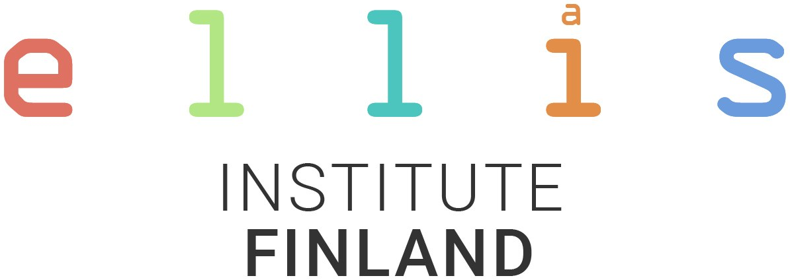
MEROS Attention is up to 24.8× Faster than Exact FA2
Why High-Res Attention Calls for Sampling
In high-resolution ViTs, attention is sharp only near each query, while 72–90% of its mass spreads thinly across thousands of distant tokens. Because this far field is diffuse, the model does not need to read every distant key, but it must estimate the far field without bias rather than pruning or averaging it away.
MEROS Gets Faster & More Accurate at High Res
MEROS Attention keeps local neighbors and global tokens exact, and estimates the far field with weighted reflected pairs in every 4×4 cell inside one dense softmax pass. Doubling the image side cancels sampling noise across 4× more independent distant cells, halving attention error (.180 → .027 from 1K to 8K) while speeding up to 24.8× on frozen ViTs with zero training or weight changes.
MEROS Attention: Same Features, Fraction of the Wait
Watch frozen DINOv3-L extract dense features at real measured whole-backbone latencies (BF16, Batch 1). MEROS ($r=8$) finishes in under a second while FlashAttention-2 takes up to 18.4 s and Vanilla Attention runs out of memory, yet MEROS and FlashAttention-2 produce nearly identical features (cosine > 0.991).
Same Time Budget, Dramatically Finer Vision
Every pair below reports the exact measured forward latency of the displayed left and right images on the same NVIDIA H200 GPU (BF16, Batch 1). Across all 22 curated comparisons (including DINOv3-style fine-grained perception: query maps, perceptual UMAP manifolds, and label-free K-Means parts), MEROS ($r=8$) runs in equal or less time while encoding up to 11.1× more pixels across DINOv3-L/B, DINOv2-L, SAM ViT-H/L, ViTMatte-B, and Depth Anything V2-L.
Explore MEROS Sampling, Weights & Real DINOv3 Features
Powered by real 2048×2048 DINOv3-B Layer 11 attention weights and UMAP feature maps from Figure 1. Click any query pin or far $4\times 4$ cell on the image, switch budgets $r\in\{1,2,4,8\}$, and toggle MEROS's signature Horvitz–Thompson weight ($\times r$ / $+\log r$) on or off to see why weighting keeps the far field unbiased.
MEROS Attention: Unbiased Estimation in One Dense Pass
MEROS splits each query's keys into three disjoint roles (the sharp local tile $\mathcal{L}_i$, the global tokens $\mathcal{G}$, and the diffuse far field $\mathcal{F}_i$) and evaluates all three under a single unified softmax normalizer with zero runtime host synchronization.
Exact Local Peak & Global Anchor
Each query computes its full $16\times 16$ local tile $\mathcal{L}_i$ and all global tokens $\mathcal{G}$ (CLS and registers) exactly. Keeping this exact mass in the softmax denominator prevents normalization blow-up and bounds output error even on worst-case draws (Proposition 3).
Reflected-Pair Horvitz–Thompson
In each distant $4\times 4$ cell, MEROS draws $8/r$ center-symmetric token pairs (e.g., 2 of 16 tokens at $r=8$) and weights them by $r$. Symmetric pairing cancels linear spatial trends exactly while keeping samples nested across $r\in\{8,4,2\}$ (Proposition 2).
Static Dense Kernel at 54% Peak
Sampled far keys are gathered once per head and shared across all 256 queries of a tile using static dense tensor shapes. The kernel runs in one CUDA graph, natively supports RoPE, relative position biases, and attention masks, and sustains 51–54% of B300 dense BF16 peak.
Figure 2: MEROS Architecture & Far-Field Anatomy
Click figure to enlarge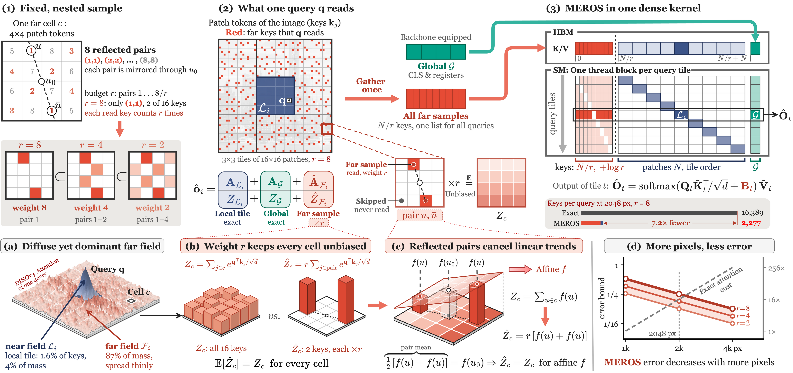
Click to zoomMEROS Attention runs in one unified softmax with zero extra weights. (1) Per-cell reflected pair sampling nests cleanly across $r\in\{8,4,2\}$. (2) Every tile executes one dense FlashAttention-style pass over exact local keys, exact globals, and $+\log r$-weighted far keys (masking $\mathcal{S}\cap\mathcal{L}_i$ with $-\infty$). (a–d) Far-field mass dominates at high resolution, while reflected pairs cancel linear variation across smooth features.
Because $r\,e^{s}=e^{s+\log r}$, Horvitz–Thompson weighting is simply a constant $+\log r$ additive bias on far logits inside standard SDPA. Setting $r=1$ recovers exact attention identically.
Here $\pi_{\mathcal{F}}$ is far-field attention mass, $D$ is value spread, and $n_{\mathrm{eff}}$ is the effective far-cell count. Since $n_{\mathrm{eff}}$ grows with total far cells $|\mathcal{C}_i|=(N-256)/16$, doubling image side quadruples $n_{\mathrm{eff}}$ and halves the RMS error bound.
Center-reflected pairs cancel linear/odd variation $V^-$ inside each cell (leaving only even curvature $V^+$), while keeping local and global tokens exact floors the softmax denominator at $\pi_{\mathrm{ex}}$ on every draw.
Empirical Verification on 7,000 Pretrained Query–Head Pairs
DINOv3-B · MAE-L · DINOv2-L w/ registers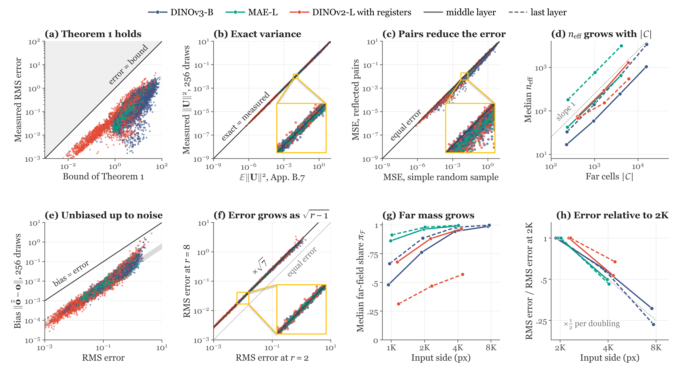
Click to zoomMEROS Attention theory holds across frozen DINOv3-B, MAE-L, and DINOv2-L. Across 7,000 query–head draws, every sample obeys Theorem 1's error bound, measured variance matches our closed-form formula, reflected pairs beat uniform random sampling, and output error scales by 0.52–0.53× per side doubling.
MEROS Attention Matches FlashAttention-4 Efficiency on NVIDIA B300
Nsight Compute · 51–54% Dense BF16 Peak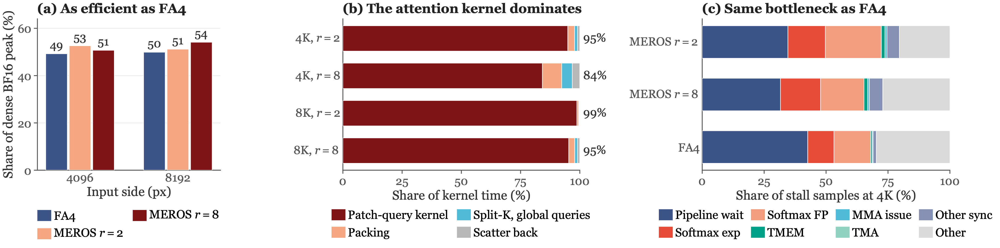
Click to zoomMEROS matches FlashAttention-4's hardware efficiency per read key. Because all 256 queries of a tile share every loaded key, MEROS sustains 252–256 FLOP/byte arithmetic intensity, achieves a 90–98% L2 hit rate, and reaches 51–54% of B300 dense BF16 peak (vs. 49–50% for FA4), translating key reduction directly into wall-clock speedup.
MEROS Is Faster & More Faithful Across 14 ViTs & 6 Tasks
In every experiment, MEROS Attention replaces global self-attention in frozen pretrained checkpoints without retraining, fine-tuning, or calibration. All speedups below state their exact baseline (Exact FlashAttention-2 (FA2) or FlashAttention-4 (FA4)) and scope (operator vs. whole backbone).
MEROS Whole-Backbone Speedup on 14 Frozen ViTs (NVIDIA B300, Batch 1)
Whole-backbone speedup of MEROS r=8 over Exact FlashAttention-2 (FA2) at 8K resolution (13.9× – 20.2×).
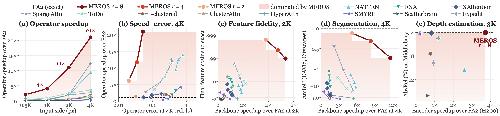
Click to zoomMEROS Attention Pareto-dominates 11 training-free attention baselines on frozen DINOv3-B. Across operator speed–error, feature cosine, 4K segmentation, and 3K depth, at least one MEROS budget is both faster and more accurate than 26 of 28 baseline configs at 2K and 24 of 25 at 4K (the only two exceptions, two PISA variants, run 2.2–2.4× slower than MEROS $r=2$ at matched error).
| Method (DINOv3-B, B300) | Operator Rel. Error ↓ | Operator Speedup vs. Exact FA2 ↑ | Backbone vs. FA2 ↑ | 8K Mem ↓ | mIoU ↑ | ||||||||
|---|---|---|---|---|---|---|---|---|---|---|---|---|---|
| 1K | 2K | 4K | 8K | 1K | 2K | 4K | 8K | 4K | 8K | UAVid | City | ||
| Exact FlashAttention-2 (FA2) | .002 | .002 | .002 | .002 | 1.00× | 1.00× | 1.00× | 1.00× | 1.00× | 1.00× | 7.42 GB | 59.13 | 74.84 |
| Exact FlashAttention-4 (FA4) | .002 | .002 | .002 | .002 | 1.26× | 2.61× | 2.97× | 2.94× | 2.51× | 2.80× | 7.42 GB | 59.13 | 74.84 |
| NATTEN | .153 | .346 | .484 | .685 | 0.25× | 1.91× | 9.49× | 23.9× | 4.95× | 18.3× | 7.45 GB | 58.43 | 71.33 |
| SpargeAttn | .108 | .096 | .063 | .055 | 0.53× | 1.94× | 2.76× | 2.95× | 2.17× | 2.89× | 7.44 GB | 58.72 | 74.38 |
| XAttention | .493 | .285 | .055 | .047 | 0.22× | 0.66× | 1.08× | 1.58× | 0.98× | 1.16× | 7.42 GB | 55.54 | 64.68 |
| PISA | .054 | .021 | .017 | .013 | 0.43× | 1.71× | 2.55× | 2.19× | 1.56× | 1.54× | 7.42 GB | 58.90 | 73.12 |
| ClusterAttn | .099 | .066 | .032 | .021 | 0.14× | 0.64× | 1.41× | 1.69× | 1.35× | 1.67× | 9.22 GB | 55.29 | 74.27 |
| i-clustered | .253 | .247 | .219 | .216 | 0.06× | 0.38× | 1.85× | 6.50× | 1.59× | 4.85× | 80.9 GB | 26.74 | 50.24 |
| HyperAttention | .764 | .541 | .356 | .344 | 0.24× | 2.01× | 12.4× | 23.0× | 1.25× | 1.31× | 7.42 GB | 52.97 | 66.81 |
| MEROS r=2 | .073 | .041 | .020 | .010 | 2.30× | 4.80× | 6.08× | 6.05× | 5.20× | 5.75× | 7.19 GB | 59.04 | 74.68 |
| MEROS r=4 | .123 | .071 | .035 | .018 | 3.42× | 7.89× | 11.7× | 12.5× | 8.28× | 11.2× | 6.94 GB | 58.96 | 74.38 |
| MEROS r=8 | .180 | .106 | .052 | .027 | 4.04× | 11.0× | 21.0× | 24.8× | 11.6× | 19.4× | 6.81 GB | 58.79 | 73.73 |
Table 1 excerpt from main paper. Operator error measured relative to FP32 exact attention on DIV8K; timings on one NVIDIA B300 at batch 1, BF16. MEROS $r=2$ achieves the lowest error of any method at 8K (0.010), and $r=8$ is the fastest at every size.
| Dataset | Backbone | Input | Exact FA2 mIoU | SpargeAttn | NATTEN | ClusterAttn | MEROS ΔmIoU ↑ | MEROS Backbone vs. FA2 ↑ | |||||||
|---|---|---|---|---|---|---|---|---|---|---|---|---|---|---|---|
| ΔmIoU | Speed | ΔmIoU | Speed | ΔmIoU | Speed | r=2 | r=4 | r=8 | r=2 | r=4 | r=8 | ||||
| Method (Native Resolution, H200) | Middlebury (30k tokens, 23 imgs) | ETH3D (129k tokens, 10 imgs) | ||||||
|---|---|---|---|---|---|---|---|---|
| AbsRel (%) ↓ | RMSE (m) ↓ | δ1 (%) ↑ | Encoder vs. FA2 ↑ | AbsRel (%) ↓ | RMSE (m) ↓ | δ1 (%) ↑ | Encoder vs. FA2 ↑ | |
| MoGe-3 ViT-G | ||||||||
| Exact FlashAttention-2 (FA2) | 2.61 | 0.106 | 99.86 | 1.00× | 3.26 | 0.136 | 99.15 | 1.00× |
| NATTEN | 7.76 | 0.310 | 95.33 | 2.48× | 23.12 | 1.151 | 58.09 | 9.43× |
| XAttention | 3.48 | 0.131 | 98.93 | 0.95× | 3.85 | 0.166 | 98.96 | 1.17× |
| i-clustered | 5.02 | 0.216 | 96.73 | 0.84× | 5.76 | 0.226 | 97.50 | 2.79× |
| Expedit | 6.46 | 0.269 | 92.92 | 1.26× | Out of Memory (OOM) | |||
| HyperAttention | 2.85 | 0.120 | 99.66 | 1.18× | 3.29 | 0.163 | 99.18 | 1.29× |
| MEROS r=2 | 2.64 | 0.107 | 99.86 | 1.86× | 3.26 | 0.136 | 99.15 | 2.39× |
| MEROS r=8 | 2.69 | 0.109 | 99.63 | 3.37× | 3.29 | 0.136 | 99.15 | 6.75× |
| Depth Anything V2-L | ||||||||
| Exact FlashAttention-2 (FA2) | 4.07 | 0.161 | 99.26 | 1.00× | 4.64 | 0.222 | 98.30 | 1.00× |
| NATTEN | 10.31 | 0.375 | 89.49 | 2.60× | 25.06 | 1.156 | 58.83 | 10.3× |
| XAttention | 4.12 | 0.166 | 98.54 | 0.83× | 6.54 | 0.305 | 96.14 | 1.00× |
| i-clustered | 7.61 | 0.301 | 93.18 | 0.76× | 8.64 | 0.377 | 91.83 | 2.61× |
| Expedit | 9.18 | 0.348 | 90.61 | 0.94× | Out of Memory (OOM) | |||
| HyperAttention | 4.97 | 0.192 | 98.39 | 1.19× | 6.44 | 0.323 | 96.03 | 1.30× |
| MEROS r=2 | 4.10 | 0.161 | 99.22 | 1.94× | 4.66 | 0.225 | 98.29 | 2.43× |
| MEROS r=8 | 4.05 | 0.161 | 99.23 | 3.72× | 4.67 | 0.224 | 98.39 | 7.33× |
Scale-and-shift aligned relative depth metrics (Table 7). Speedup is encoder latency over Exact FlashAttention-2 on NVIDIA H200. Official SpargeAttn fails at these token counts. On all 454 ETH3D images (MoGe-3 ViT-G, Table S15), MEROS $r=8$ holds AbsRel at 3.66% vs. 3.63% Exact (6.75× faster, RMSE 0.492 m), whereas i-clustered drops to 8.79% and Expedit (default) runs out of memory.
| Method (ViTMatte-B, Native Res) | PPM-100 (avg. 2875×2997 px) | AIM-500 (avg. 1260×1397 px) | ||||||||||
|---|---|---|---|---|---|---|---|---|---|---|---|---|
| SAD ↓ | MSE ↓ | Grad ↓ | Conn ↓ | vs. Exact ↑ | Mem ↓ | SAD ↓ | MSE ↓ | Grad ↓ | Conn ↓ | vs. Exact ↑ | Mem ↓ | |
| ViTMatte-B, original | Out of memory on 36 / 100 images | 260 GB | 14.4 | 11.69 | 11.1 | 13.7 | 0.90× | 16.0 GB | ||||
| ViTMatte-B, Exact (chunked) | 35.3 | 13.92 | 36.5 | 32.3 | 1.00× | 22.3 GB | 14.4 | 11.69 | 11.1 | 13.7 | 1.00× | 3.7 GB |
| MEMatte-B† (trained router) | 37.1 | 15.80 | 41.6 | 35.0 | 2.96× | 33.3 GB | 16.7 | 15.60 | 13.9 | 16.0 | 1.12× | 3.6 GB |
| PiToMe (keep 0.5) | 35.5 | 13.96 | 37.1 | 32.9 | 1.27× | 95.9 GB | 14.5 | 11.77 | 11.3 | 13.9 | 1.11× | 7.2 GB |
| PISA (w/o pos. bias) | 37.8 | 15.06 | 37.6 | 34.9 | 3.06× | 26.9 GB | 14.8 | 12.28 | 11.3 | 14.0 | 1.79× | 3.7 GB |
| SpargeAttn (w/o pos. bias) | 37.4 | 14.72 | 37.2 | 34.4 | 3.11× | 28.3 GB | 14.8 | 12.17 | 11.3 | 14.1 | 1.83× | 3.7 GB |
| ClusterAttn (w/o pos. bias) | 38.0 | 15.20 | 37.8 | 35.2 | 2.96× | 27.3 GB | 14.8 | 12.35 | 11.4 | 14.1 | 0.68× | 3.8 GB |
| MEROS r=2 (keeps pos. bias) | 35.2 | 13.85 | 36.4 | 32.2 | 2.23× | 22.7 GB | 14.2 | 11.52 | 11.1 | 13.6 | 1.98× | 3.7 GB |
| MEROS r=4 (keeps pos. bias) | 35.4 | 13.96 | 36.6 | 32.4 | 2.97× | 21.8 GB | 14.5 | 11.82 | 11.2 | 13.7 | 2.14× | 3.7 GB |
| MEROS r=8 (keeps pos. bias) | 35.5 | 14.00 | 36.7 | 32.6 | 3.78× | 22.7 GB | 14.6 | 11.94 | 11.2 | 13.8 | 2.63× | 3.8 GB |
Table 5. MSE in $10^{-3}$. Speedup is whole-backbone speedup over query-chunked Exact attention on one B300. Dropping ViTMatte's relative position bias alone degrades exact SAD from 35.3 → 38.0 on PPM-100.
Where Time-to-First-Token (TTFT) Goes on 8K Images (Qwen3-VL-8B)
The vision encoder takes 10.83 s of 12.60 s (86%), so post-encoder pruning plateaus at 1.11× over Exact FlashAttention-2. MEROS accelerates the vision encoder 5.75× and composes directly with SparseVLM.
| Method (HR-Bench 8K & 4K) | Qwen3-VL-8B (native) | Qwen3-VL-4B (native) | GLM-4.6V-Flash (native) | Kimi-VL-A3B (4 MP) | ||||||||
|---|---|---|---|---|---|---|---|---|---|---|---|---|
| 8K ↑ | 4K ↑ | TTFT (vs. FA2) | 8K ↑ | 4K ↑ | TTFT (vs. FA2) | 8K ↑ | 4K ↑ | TTFT (vs. FA2) | 8K ↑ | 4K ↑ | TTFT (vs. FA2) | |
| Exact FlashAttention-2 (FA2) | 67.75 | 73.38 | 12.60s (1.00×) | 65.12 | 69.62 | 7.99s (1.00×) | 65.62 | 71.38 | 19.48s (1.00×) | 55.25 | 58.38 | 3.26s (1.00×) |
| Exact FlashAttention-4 (FA4) | 68.00 | 73.25 | 5.01s (2.51×) | 65.50 | 69.25 | 3.89s (2.05×) | 65.38 | 71.50 | 8.10s (2.41×) | 54.75 | 58.00 | 0.38s (8.50×) |
| FastV (post-encoder) | 68.12 | 73.50 | 11.52s (1.09×) | 65.62 | 68.75 | 7.01s (1.14×) | 65.75 | 72.38 | 17.43s (1.12×) | 55.50 | 58.25 | 3.14s (1.04×) |
| SparseVLM (post-encoder) | 68.25 | 73.88 | 11.30s (1.11×) | 65.12 | 69.62 | 6.82s (1.17×) | 66.50 | 71.88 | 17.01s (1.15×) | 54.62 | 57.88 | 3.12s (1.04×) |
| Window attention (encoder) | 63.87 | 68.38 | 3.81s (3.30×) | 51.75 | – | – | 60.38 | – | – | 51.25 | – | – |
| MEROS r=2 | 68.91 | 73.76 | 8.16s (1.54×) | 65.71 | 69.15 | 4.94s (1.62×) | 65.92 | 72.62 | 10.65s (1.83×) | 55.93 | 58.71 | 0.46s (7.10×) |
| MEROS r=8 | 67.85 | 72.32 | 3.66s (3.45×) | 64.23 | 68.54 | 2.62s (3.05×) | 64.58 | 70.38 | 5.47s (3.57×) | 55.31 | 57.63 | 0.37s (8.75×) |
| MEROS r=8 + SparseVLM | 68.89 | 73.89 | 2.35s (5.36×) | 65.67 | 68.63 | 1.44s (5.54×) | 65.71 | 71.91 | 3.02s (6.45×) | 55.57 | 57.81 | 0.23s (14.2×) |
Table 6 (official VLMEvalKit). Combining MEROS $r=8$ inside the vision encoder with SparseVLM in the LLM achieves 5.36×–14.2× TTFT speedup over Exact FlashAttention-2 while matching or exceeding exact accuracy on HR-Bench 8K across all four VLMs.
Dichotomous Segmentation (DIS-TE, 2,000 images)
| DINOv3-B Method | $F_\beta^{\max}$ ↑ | $S_\alpha$ ↑ | HCE$_\gamma$ ↓ | ms ↓ |
|---|---|---|---|---|
| 1024 px input | ||||
| Exact FlashAttention-2 (1024 px) | .781 | .807 | 1443 | 7.2 |
| MEROS r=8 (1024 px) | .775 | .803 | 1438 | 2.5 |
| 2048 px input | ||||
| Exact FlashAttention-2 (2048 px) | .816 | .823 | 1514 | 43.2 |
| SpargeAttn | .813 | .820 | 1527 | 33.2 |
| NATTEN | .762 | .786 | 1532 | 26.5 |
| XAttention | .777 | .798 | 1525 | 58.9 |
| MEROS r=2 (2048 px) | .815 | .822 | 1513 | 11.4 |
| MEROS r=8 (2048 px) | .809 | .818 | 1513 | 8.1 |
Iso-latency win: MEROS $r=8$ at 2048 px runs in 8.1 ms (5.3× faster than 2048 px Exact FA2 and matching 1024 px Exact FA2 at 7.2 ms) while gaining +0.028 $F_\beta^{\max}$ on thin wires and lattices.
Component Ablations (DINOv3-B, r=8)
| Variant (one change) | UAVid Err ↓ | City Err ↓ | Agree (%) ↑ | City ΔmIoU ↑ |
|---|---|---|---|---|
| Local tile sampled | .253 | .411 | 95.1 | −12.64 |
| No HT weight $r$ | .439 | .476 | 96.1 | −7.61 |
| Fixed grid | .169 | .201 | 98.3 | −2.11 |
| $8\times 8$ local tile | .171 | .216 | 98.4 | −1.91 |
| Full MEROS (r=8) | .141 | .162 | 98.9 | −1.11 |
Table 8b. Sampling the local tile loses 12.64 mIoU on Cityscapes segmentation; omitting the $+\log r$ Horvitz–Thompson weight nearly triples feature error; Full MEROS agrees with Exact FlashAttention-2 on 98.9% of predicted pixels.
MEROS Attention Preserves Native-Resolution Fidelity
Compare MEROS $r=8$ directly against Exact FlashAttention-2 and baselines across 6K monocular depth, 1:1 native-pixel matting crops (6000×4000), 3D point clouds, dense segmentation, and 8K VLM visual reasoning.
Native-Resolution Relative Depth Results (Middlebury & ETH3D, NVIDIA H200)
All 454 ETH3D (MoGe-3): Exact 3.63% → MEROS r=8 3.66% (6.75×) vs. i-clustered 8.79%| Method (Native Resolution, H200) | Middlebury (30k tokens, 23 imgs) | ETH3D (129k tokens, 10 imgs) | ||||||
|---|---|---|---|---|---|---|---|---|
| AbsRel (%) ↓ | RMSE (m) ↓ | δ1 (%) ↑ | Encoder vs. FA2 ↑ | AbsRel (%) ↓ | RMSE (m) ↓ | δ1 (%) ↑ | Encoder vs. FA2 ↑ | |
| MoGe-3 ViT-G | ||||||||
| Exact FlashAttention-2 (FA2) | 2.61 | 0.106 | 99.86 | 1.00× | 3.26 | 0.136 | 99.15 | 1.00× |
| NATTEN | 7.76 | 0.310 | 95.33 | 2.48× | 23.12 | 1.151 | 58.09 | 9.43× |
| XAttention | 3.48 | 0.131 | 98.93 | 0.95× | 3.85 | 0.166 | 98.96 | 1.17× |
| i-clustered | 5.02 | 0.216 | 96.73 | 0.84× | 5.76 | 0.226 | 97.50 | 2.79× |
| Expedit | 6.46 | 0.269 | 92.92 | 1.26× | Out of Memory (OOM) | |||
| HyperAttention | 2.85 | 0.120 | 99.66 | 1.18× | 3.29 | 0.163 | 99.18 | 1.29× |
| MEROS r=2 | 2.64 | 0.107 | 99.86 | 1.86× | 3.26 | 0.136 | 99.15 | 2.39× |
| MEROS r=8 | 2.69 | 0.109 | 99.63 | 3.37× | 3.29 | 0.136 | 99.15 | 6.75× |
| Depth Anything V2-L | ||||||||
| Exact FlashAttention-2 (FA2) | 4.07 | 0.161 | 99.26 | 1.00× | 4.64 | 0.222 | 98.30 | 1.00× |
| NATTEN | 10.31 | 0.375 | 89.49 | 2.60× | 25.06 | 1.156 | 58.83 | 10.3× |
| XAttention | 4.12 | 0.166 | 98.54 | 0.83× | 6.54 | 0.305 | 96.14 | 1.00× |
| i-clustered | 7.61 | 0.301 | 93.18 | 0.76× | 8.64 | 0.377 | 91.83 | 2.61× |
| Expedit | 9.18 | 0.348 | 90.61 | 0.94× | Out of Memory (OOM) | |||
| HyperAttention | 4.97 | 0.192 | 98.39 | 1.19× | 6.44 | 0.323 | 96.03 | 1.30× |
| MEROS r=2 | 4.10 | 0.161 | 99.22 | 1.94× | 4.66 | 0.225 | 98.29 | 2.43× |
| MEROS r=8 | 4.05 | 0.161 | 99.23 | 3.72× | 4.67 | 0.224 | 98.39 | 7.33× |
Table 7 (scale-and-shift aligned relative depth at native resolution; bold = best apart from Exact). Encoder speedup is measured over Exact FlashAttention-2 on one NVIDIA H200. Full 454-image ETH3D evaluation on MoGe-3 ViT-G (Table S15): Exact 3.63% / 0.493 m vs. MEROS $r=2$ 3.64% (2.39×), $r=4$ 3.64% / 0.492 m (4.26×), $r=8$ 3.66% / 0.492 m (6.75×), while i-clustered drops to 8.79% and default Expedit runs out of memory.
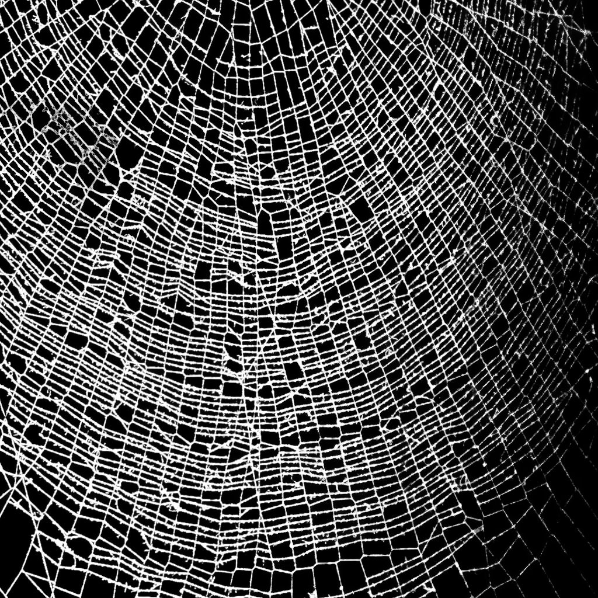
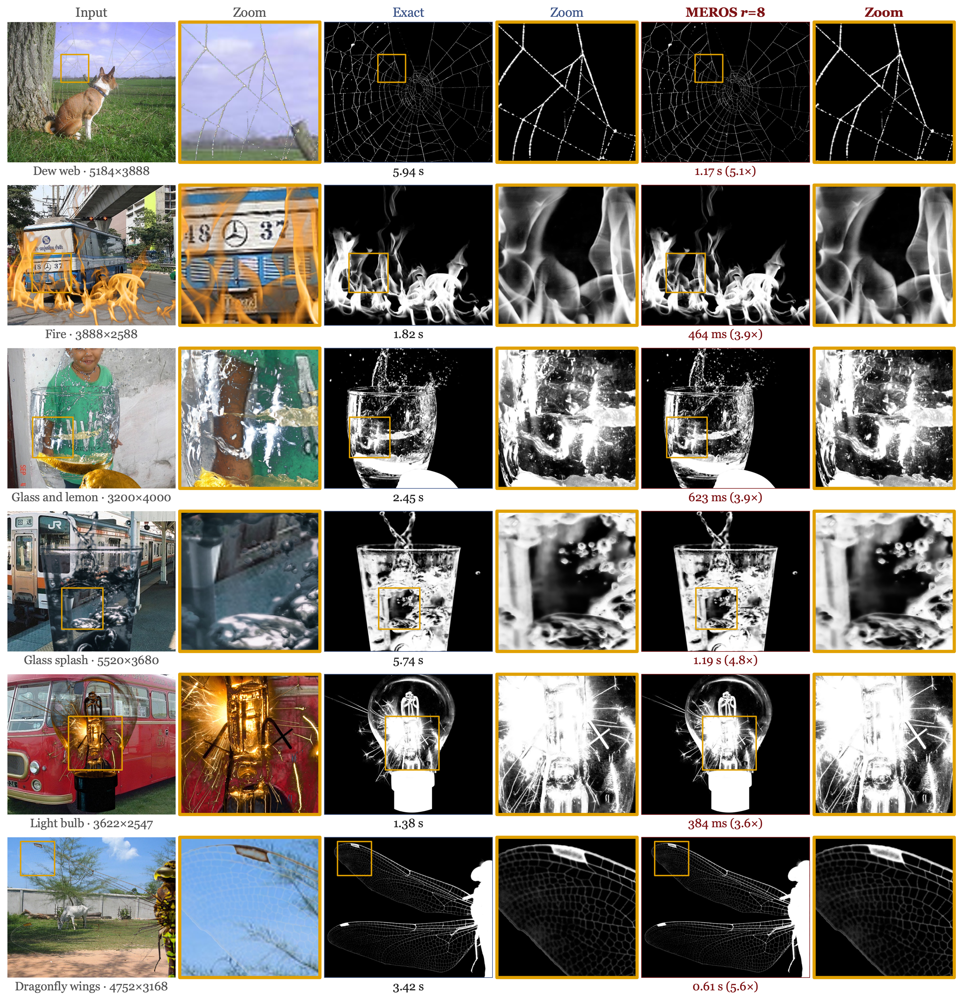
Click to zoom full T460 galleryTransparent-460 native-resolution gallery. MEROS runs 4.6–5.6× faster than query-chunked exact attention (e.g., Dragonfly wings 3.42 s → 0.61 s; Dew web 5.94 s → 1.17 s) while keeping peak memory under 29 GB.
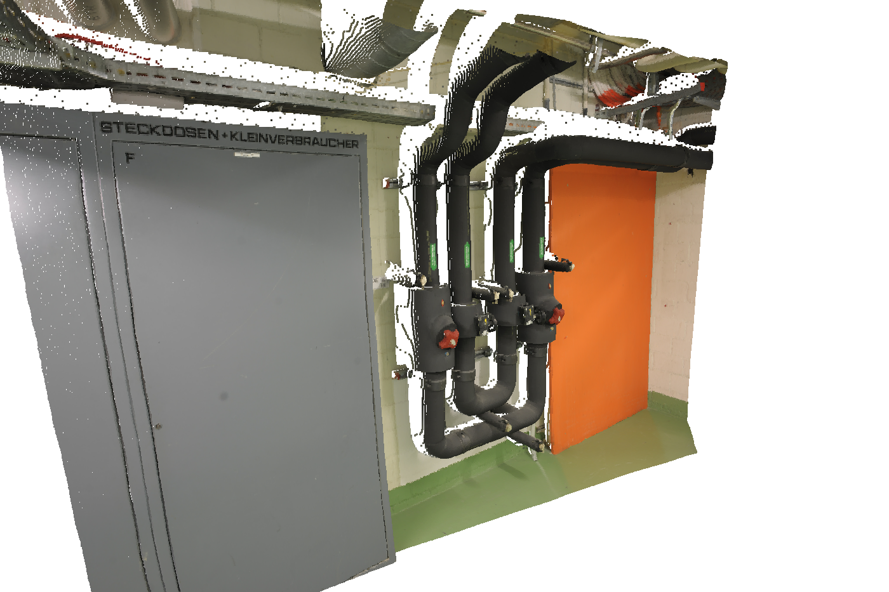
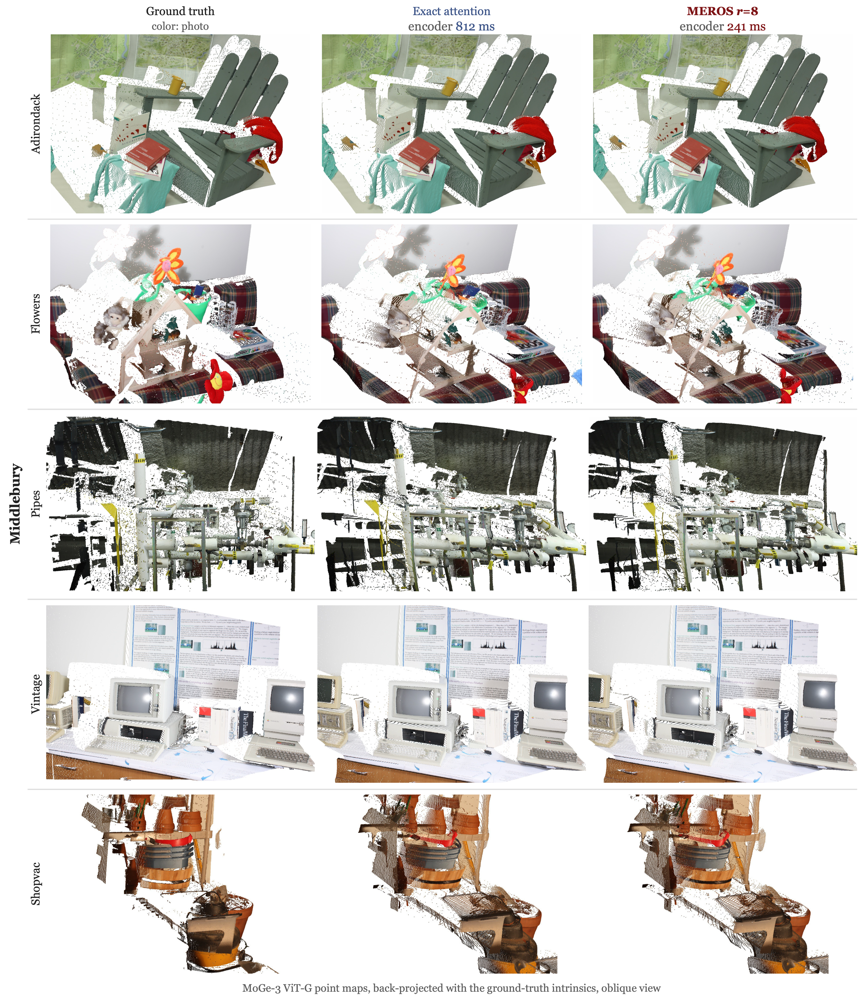
Click to zoom 3D point map plate3D point clouds stay geometrically locked to Exact FlashAttention-2 (within 0.06 Chamfer distance on ETH3D) at 6.8× lower encoder latency.
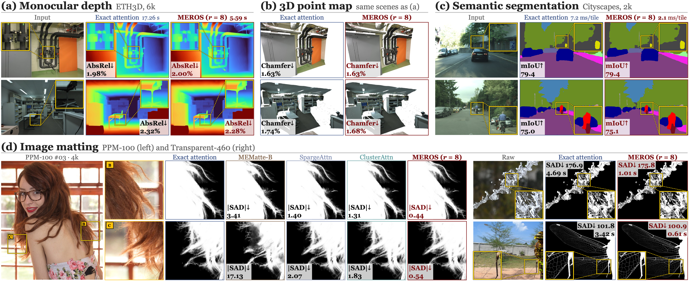
Click to zoomMain paper qualitative comparison (Figure 4): Depth, 3D point maps, Cityscapes segmentation, and native-resolution matting side-by-side.
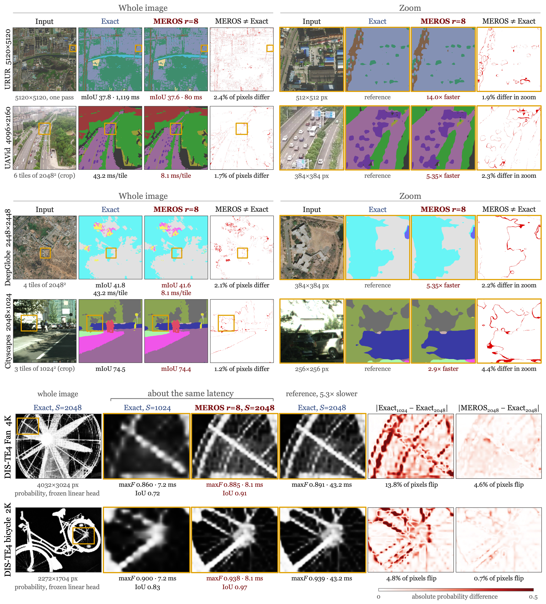
Click to zoomDense Segmentation & DIS5K: Whole $5120^2$ URUR in 80 ms (14.0× faster than Exact FA2) and crisp iso-latency DIS-TE4 thin structures (8.1 ms).
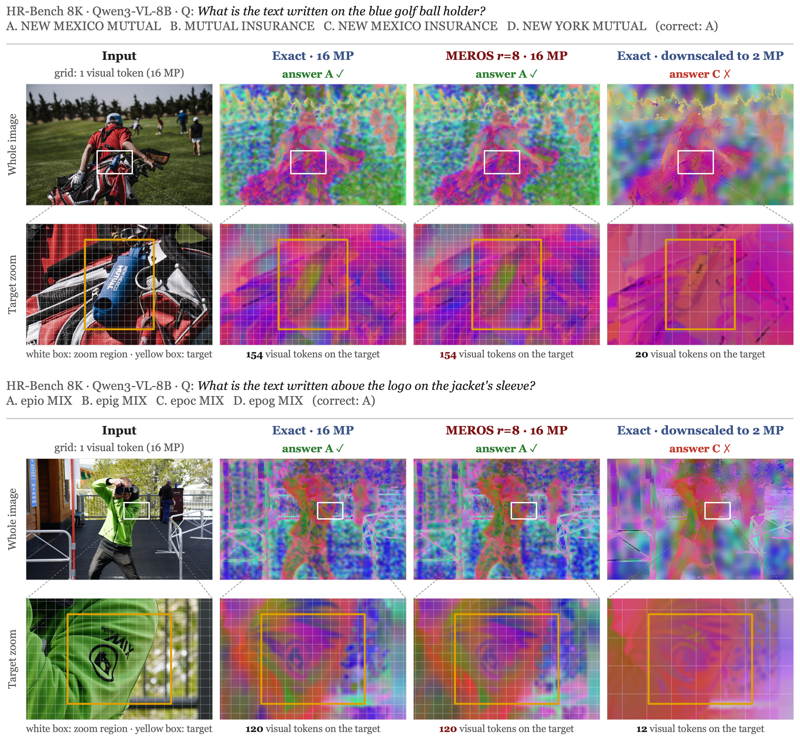
Click to zoom8K Vision-Language Reasoning (HR-Bench): Native resolution gives tiny details 7.7× more visual tokens (154 vs. 20 at 4 MP) while MEROS + SparseVLM cuts TTFT from 12.60 s Exact FA2 to 2.35 s (5.36× faster).
The Entire MEROS Algorithm in 42 Lines of PyTorch
Verbatim from Listing 1 of the paper, runnable directly on standard torch.nn.functional.scaled_dot_product_attention with zero custom C++ extensions required to verify outputs (our Triton and CuTe kernels on GitHub fuse the tile loop to reach 54% B300 BF16 peak).
Cite MEROS
If you find MEROS useful in your research or high-resolution ViT deployment, please consider citing our work.
@article{yu2026meros,
title = {MEROS: The More a ViT Sees, the Less Precise It Needs to Attend},
author = {Yu, Hao and Xue, Feng and Wei, Hui and Zhao, Guoying},
journal = {arXiv preprint},
year = {2026}
}